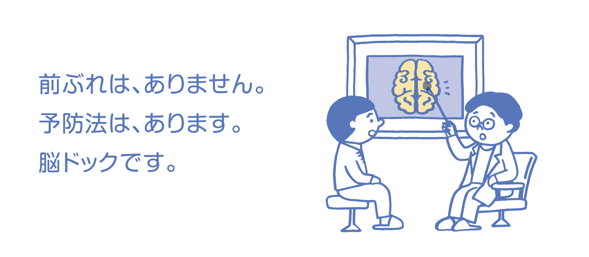

脳ドック



脳ドックについて
日本人の死因の上位で患者数も増え続ける「脳卒中」。たとえ救命できても後遺症が残り、要介護になることも多く、社会復帰が難しい病気の一つです。脳卒中はその多くが前ぶれもなく突然発症します。その脳卒中を予防する有力な手段が「脳ドック」です。脳卒中には脳内出血や脳梗塞などがあり、脳内出血の危険因子となる脳動脈瘤、脳梗塞の危険因子となる脳血管や頚動脈の狭窄を発見し、その病状の改善や進行を遅らせるために早期治療を行うことが何よりも大切です。当院では最新鋭の装置を活用し、より詳細な画像で脳外科専門医が診断します。
料金（税込）
◎宿泊ドック（170,610円）＋脳ドック（55,000円）／225,610円（税込） ※脳ドック単独では受けられません。
検査曜日
◎火曜日・木曜日 午後
健診の流れ
検査当日午前中
通常の宿泊ドック
火曜日・木曜日予定の検査
昼 食
午後2時より
頭部ＭＲＩ・ＭＲＡ検査
ＭＲＩ 脳梗塞がないか等、脳を見ます。
ＭＲＡ 脳の中の血管の状態を見ます。
午後3時より（午後4時頃終了予定）
頚部血管エコー
超音波を当てて頚部の血管（動脈）の壁の厚みや血流の速さを測定します。動脈硬化の様子を観察し、脳梗塞や脳障害を起こす危険性を予測するのに有用な検査です。
約3週間後
医師より
宿泊ドック結果とあわせて説明
留意事項
- ・体内にペースメーカー、植え込み型除細動器や人工内耳が入っている方は検査できません。また脳動脈瘤クリップ、人工心臓弁、血管ステントなどの金属や電子機器、その他の手術などで磁性（磁石にひきつけられる性質）のあるものが体内に入っている方は検査できない場合があります。
- ・入室する際、補聴器、装飾品、腕時計、ポケット中の鍵、エレキバン、使い捨てカイロ、湿布や貼る薬剤、磁気カード類や入れ歯などは、外していただきます。場合によりアイシャドウなどのお化粧も落としていただくことがあります。
- ・閉所恐怖症の方は検査ができない場合があります。無理をなさらずにお申出ください。
- ・入れ墨をされている方は火傷、熱感や変色をきたす恐れがあります。